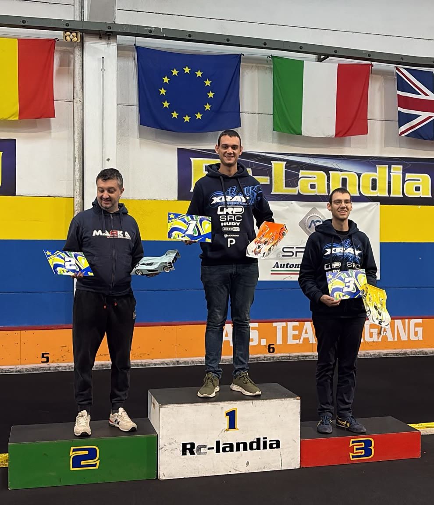

Un guastafeste per Fenili
Orlando Fenili domina la mattina e vince la giornata, ma a rovinargli la festa perfetta ci pensa Alessio Tolomelli, all'esordio in campionato: suo il giro più veloce, sua la prima finale.
Nella 1/12 le manche durano otto minuti e non perdonano: quaranta giri da tenere insieme senza un passaggio a vuoto. Al via della terza prova si presentano in dieci, tutti in un unico gruppo, e un nome nuovo nella lista: Alessio Tolomelli, che in campionato non aveva ancora corso.
Il favorito
Orlando Fenili arriva a RcLandia con una sola prova all'attivo, la seconda, vinta partendo dalla pole. Non ha nessuna intenzione di cambiare copione. È il più rapido nelle libere e vince tutte e tre le manche di qualifica, sempre con quarantuno giri.
Chi prova a stargli dietro è proprio Tolomelli. Nella terza qualifica gli chiude a quattro secondi con lo stesso numero di giri e intanto firma il giro più veloce della giornata. Le qualifiche non sono tenere con tutti: Bianchi nella prima e Gilioli nella seconda completano appena dieci giri, Neri e Mecugni si fermano presto nella terza.
La griglia delle finali vede Orlando Fenili in pole davanti a Riccardo Fenili, Tolomelli, Bianchi e Galli.
Il guastafeste
La prima finale sembra scritta in partenza. Orlando Fenili prende il comando e lo amministra. Tolomelli parte terzo, alle spalle di Riccardo Fenili, e al venticinquesimo giro gli prende la seconda posizione. Davanti però per trentacinque giri non cambia niente.
Poi, a quattro giri dalla bandiera, Fenili sbaglia su un'isola verde e la sua macchina si ribalta. Serve il commissario per rimetterla in piedi, e quando riparte Tolomelli gli è già sfilato davanti. Il debuttante non si fa pregare: tiene duro fino in fondo e vince.
Riccardo Fenili completa il podio della manche davanti a Neri e Bianchi.
La risposta
La seconda finale si incendia subito. Al primo giro Tolomelli e Bianchi si toccano dopo la prima curva, e qualche curva più in là Tolomelli si ribalta nello yin e yang , le due isole contrapposte prima del traguardo: è la prima vittima di un tratto che, prima di sera, ne collezionerà altre anche nella Vaschetta e nella GT. Mentre il commissario lo rimette in pista Bianchi lo passa e sale terzo. Per Tolomelli è l'inizio della fine: si ferma dopo otto giri.
Poco dopo è il rettilineo a fare vittime. Neri e Mazzini, gli ultimi a passare sul traguardo, toccano le sponde e si ribaltano, ciascuno per un errore proprio. Per Mazzini la gara finisce lì, Neri si fermerà al nono giro. Mentre i commissari rimettono in pista le loro macchine arrivano i due Fenili, che perdono qualche secondo dietro ai recuperi.
Il contrattempo non cambia l'ordine davanti: Orlando Fenili guida la manche senza mai voltarsi indietro, con Riccardo Fenili secondo e Bianchi terzo.
Nella terza finale Orlando chiude la pratica allo stesso modo: in testa dal via alla bandiera, senza mai cedere la posizione. Tolomelli torna a fare il suo mestiere e al tredicesimo giro, quando Riccardo Fenili tocca un travetto, gli prende il secondo posto e non lo molla più.
Riccardo Fenili, terzo, si consola con il giro più veloce della manche.
Dietro i primi
La storia più bella del gruppo è quella di Marco Mecugni. Parte dall'ultima casella della griglia in tutte e tre le finali, e nella prima la sua gara dura appena nove giri. Nella seconda però è un'altra musica: al primo giro è già quinto. Al terzo giro, ancora nello yin e yang , si tocca con Gilioli e ha la peggio: la macchina si ribalta e serve il commissario. Gilioli, che ha causato il contatto, si ferma ad aspettarlo e gli restituisce la posizione. Mecugni riparte settimo e da lì risale una posizione alla volta, fino a chiudere quarto.
Luca Torreggiani costruisce la sua giornata sulla costanza. Nella terza finale scivola nono dopo il primo giro, rimonta con pazienza e a otto giri dalla fine passa Bianchi per il quarto posto. Alla fine è quinto di giornata, davanti a Mecugni, Neri, Galli, Mazzini e Gilioli.
Il campionato
In classifica generale comanda ancora Alessandro Bianchi, quarto di giornata, davanti a Galli e Neri. Ma chi guarda i numeri con attenzione vede altro. Orlando Fenili ha corso due prove su tre e le ha vinte entrambe partendo dalla pole: è già quinto, e a fine stagione si scarta il risultato peggiore.
Il campionato della 1/12 ha appena trovato il suo uomo da battere. E, da domenica, anche qualcuno che sa come farlo.
Il podio di giornata

PoleOrlando Fenili
- Alessio Tolomelli2
- Orlando Fenili1
- Riccardo Fenili3
4. Alessandro Bianchi · 5. Luca Torreggiani · 6. Marco Mecugni · 7. Mario Neri · 8. Marcello Galli · 9. Marco Mazzini · 10. Silvano Gilioli